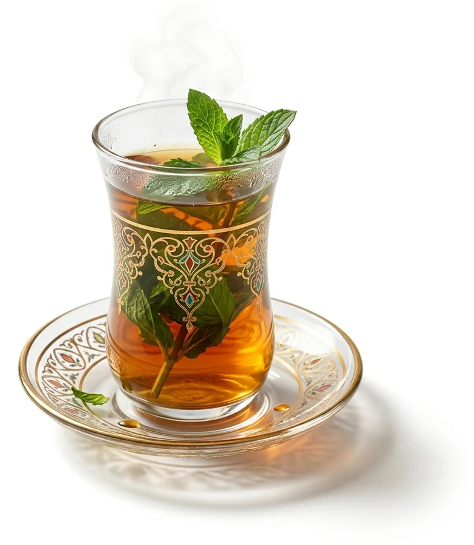

Je suis une théière.
Le serveur refuse de préparer le café : c'est une théière. C'est officiel depuis le 1er avril 1998 (RFC 2324, HTCPCP/1.0), et le Niger approuve.

Le serveur refuse de préparer le café : c'est une théière. C'est officiel depuis le 1er avril 1998 (RFC 2324, HTCPCP/1.0), et le Niger approuve.